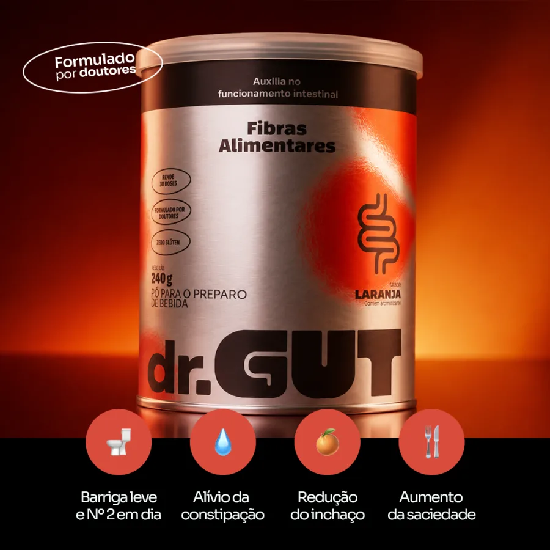
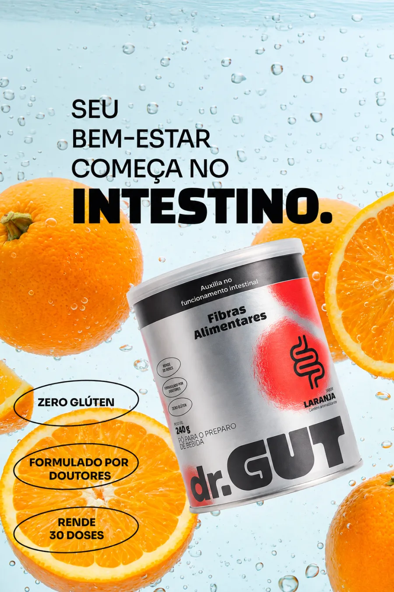
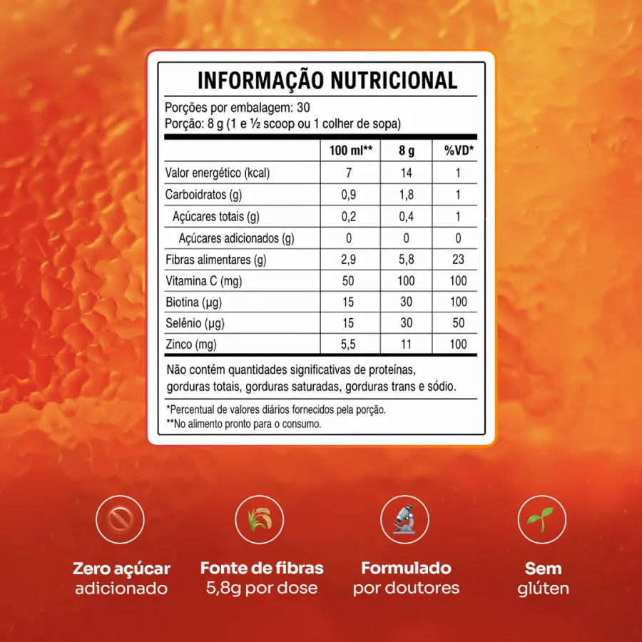
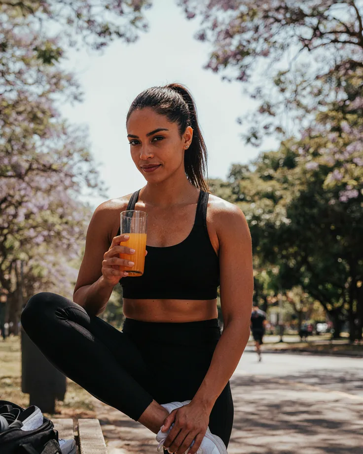
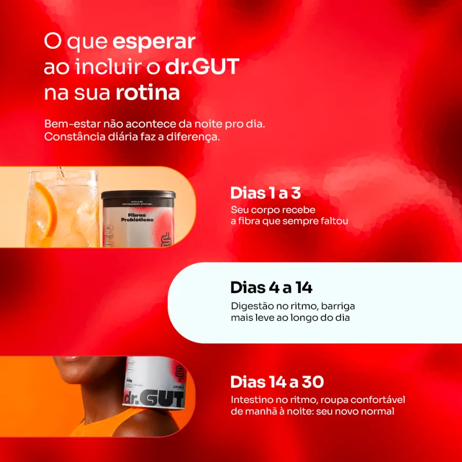

7 motivos pelos quais quem está emagrecendo ama a dr.GUT (além do intestino em dia)
Se você está emagrecendo com dieta, treino ou canetinha (GLP-1), sabe que o intestino costuma travar e a nutrição fica para trás. A dr.GUT entra na rotina num copo por dia: 5,8 g de fibras prebióticas, vitaminas e minerais, com 14 kcal e sabor laranja de verdade.
Formulado por doutores[PREENCHER nº] profissionais de saúde indicam a dr.GUT

01
Intestino em dia (sério)
Emagrecer, comer menos e usar GLP-1 costumam deixar o intestino preso. As 3 fibras prebióticas da dr.GUT, 5,8 g por dose, dão volume e maciez ao trânsito intestinal. Fibras alimentares auxiliam no funcionamento do intestino: é o Nº 2 em dia, todos os dias, sem laxante.

02
Preenche as lacunas de nutrientes enquanto você emagrece
Prato menor também quer dizer menos nutrientes. Cada dose traz 100% do valor diário de vitamina C, zinco e biotina e 50% de selênio. Vitamina C, zinco e selênio contribuem para o funcionamento normal do sistema imune.
03
Menos belisco às 16h
As fibras retardam o esvaziamento do estômago e prolongam a sensação de saciedade depois das refeições. Muita gente toma antes do almoço e percebe a diferença na fome da tarde.

04
Muita nutrição, pouca caloria
São 14 kcal por dose, zero açúcar adicionado e adoçante natural. Num dia de déficit calórico, quase todo o copo é fibra, vitamina e mineral.

05
Emagrecer sem perder o pique
Digestão pesada rouba disposição, e um intestino leve devolve. A dose também traz zinco e selênio, que contribuem para a proteção das células e para a imunidade, para você não parar a rotina no meio do caminho.
06
Um hábito de 30 segundos, muitos benefícios
Uma colher de sopa em 200 ml de água gelada, mexe e pronto. Dissolve rápido, sem gosma e sem liquidificador. É o ritual que você finalmente consegue manter: [PREENCHER: % de clientes que tomam 5+ dias por semana].

07
Gostoso, formulado por doutores e aprovado por milhares
Tem sabor laranja de verdade, não "gostinho aceitável". A fórmula foi desenvolvida por doutores, com cada ingrediente na dose certa e sem promessa mágica.
[PREENCHER: estudo ou teste de eficácia, com desenho, nº de participantes, duração e resultados. Ex.: "X% relataram melhora do trânsito intestinal em 14 dias".]
Quem usa, sente
[00]%relataram intestino mais regular
[00]%sentiram a barriga menos estufada
[00]%sentiram mais saciedade entre refeições
[00]%dizem que é fácil de manter todo dia
[PREENCHER: fonte da pesquisa, nº de participantes, data]
087.500+
Aprovado por mais de 7.500 clientes
Nota média 4,9 de 5. Quem já testou explica melhor que a gente: intestino no ritmo, barriga mais leve e um copo que dá vontade de tomar.
Desconto aplicado automaticamente no checkout [CONFERIR: o desconto por quantidade entra no checkout?]
Frete grátis acima de R$ 247
Garantia de 30 dias ou seu dinheiro de volta
Pix, boleto ou cartão
Garantia incondicional de 30 dias. Se você não sentir diferença no seu trânsito intestinal em 30 dias de uso contínuo, devolvemos 100% do seu dinheiro. Sem burocracia, sem questionamento.
Por que dr.GUT?
Alimenta, não empurra. Laxante força e o problema volta. A dr.GUT alimenta as bactérias boas, e elas fazem o intestino funcionar sozinho.
Gostosa. Sabor laranja de verdade, que parece suco.
Prática. Pronta em 30 segundos, em água gelada.
Sem gosma e sem bagunça. Dissolve rápido, sem liquidificador.
Ingredientes e alergênicos
3 fibras prebióticas ([PREENCHER nomes das fibras]), vitamina C, biotina, selênio e zinco, com aroma natural de laranja e [PREENCHER adoçante natural].
Sem glúten. Zero açúcar adicionado. [PREENCHER: alergênicos conforme o rótulo]
Ciência e certificações
A fórmula foi desenvolvida por doutores, com doses de verdade e sem exagero.
[PREENCHER: registro/notificação ANVISA, fábrica certificada (BPF), laudos de terceiros]
Modo de uso
Misture 1 colher de sopa (8 g, ou 1 e ½ scoop) em cerca de 200 ml de água gelada. Mexa e tome uma vez ao dia, de preferência antes de uma refeição. Para resultados consistentes, use todos os dias.
Benefícios
Auxilia no funcionamento do intestino
Contribui para a sensação de saciedade
Barriga mais leve ao longo do dia
Vitamina C, zinco e selênio para a imunidade
Biotina, que contribui para a manutenção do cabelo e da pele
Tem gosto de laranja de verdade
É gelada, cítrica e leve. Nada de "gostinho de remédio".
Cada dose traz
3 fibras prebióticas
Vitamina C
Zinco
Selênio
Biotina
Adoçante natural
Zero açúcar adicionado
5,8 g de fibra por dose
Formulado por doutores
Sem glúten
Informação nutricional
Porções por embalagem: 30 Porção: 8 g (1 e ½ scoop ou 1 colher de sopa)
100 ml**
8 g
%VD*
Valor energético (kcal)
7
14
1
Carboidratos (g)
0,9
1,8
1
Açúcares totais (g)
0,2
0,4
1
Açúcares adicionados (g)
0
0
0
Fibras alimentares (g)
2,9
5,8
23
Vitamina C (mg)
50
100
100
Biotina (µg)
15
30
100
Selênio (µg)
15
30
50
Zinco (mg)
5,5
11
100
Não contém quantidades significativas de proteínas, gorduras totais, gorduras saturadas, gorduras trans e sódio.
*Percentual de valores diários fornecidos pela porção. **No alimento pronto para o consumo.
Avaliações reais de quem está cuidando do corpo
4,9de 5 · mais de 7.500 clientes
Tomo antes do almoço e a diferença na fome da tarde é nítida, aquele belisco das 16h sumiu. E preciso falar: o sabor é bom DEMAIS pra fibra, parece suco. Meu marido começou a roubar o meu, tive que assinar dois.
Fernanda, 45Depoimento publicado pela dr.GUT
Gente, terceira semana e meu intestino descobriu que existe rotina kkkkk eu era do time "2x por semana com sorte" e achava normal. Hoje é TODO dia, de manhã, tipo reloginho mesmo. Nunca que eu ia imaginar que era só… fibra?
Camila, 34Depoimento publicado pela dr.GUT
O que mudou pra mim: chegar às 19h com a MESMA barriga das 8h. Eu vivia estufada no fim do dia e jurava que era "meu normal". Umas 2 semanas de uso constante e a calça parou de me apertar de noite. Chocada até agora.
Juliana, 29Depoimento publicado pela dr.GUT
Comprei desconfiada pq já joguei dinheiro fora com uns 3 pós verdes. A diferença: esse aqui eu CONTINUO tomando. Dissolve rápido, não tem aquela gosma, e o gosto de laranja é gostoso de verdade. Já pedi o segundo pote.
Renata, 41Depoimento publicado pela dr.GUT
Sou mãe de 2, meu autocuidado tem que caber em segundos ou não existe. Esse cabe: água gelada, mexo, pronto, saio tomando. É o único suplemento que eu não abandonei na segunda semana da vida.
Patrícia, 38Depoimento publicado pela dr.GUT
[PREENCHER: depoimentos de clientes em emagrecimento ou GLP-1, com autorização]